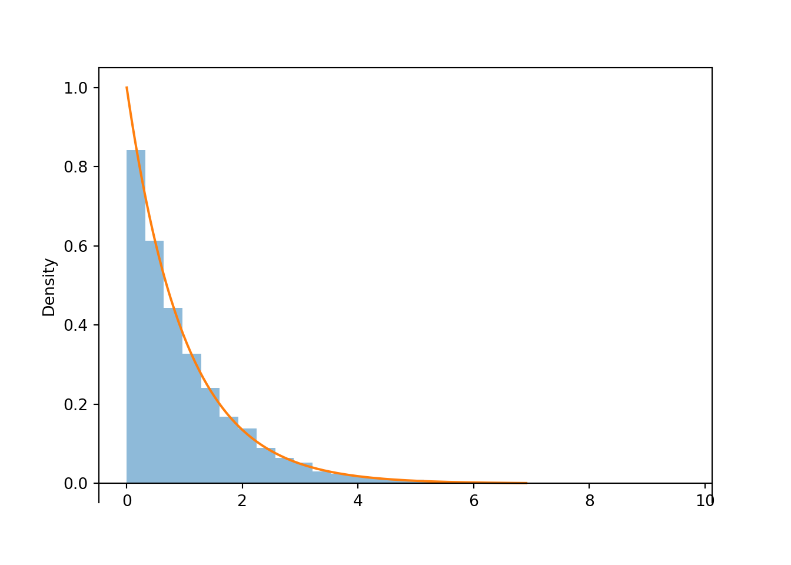

7.1 A brief review of continuous distributions
This section provides a brief review of continuous probability distributions. Throughout, \(U\) represents a continuous random variable that takes values denoted \(u\). In a Bayesian framework, \(u\) can represent either values of parameters \(\theta\) or values of data \(y\).
The probability distribution of a continuous random variable is (usually) specified by its probability density function (pdf) (a.k.a., density), usually denoted \(f\) or \(f_U\). A pdf \(f\) must satisfy: \[\begin{align*} f(u) &\ge 0 \qquad \text{for all } u\\ \int_{-\infty}^\infty f(u) du & = 1 \end{align*}\] For a continuous random variable \(U\) with pdf \(f\) the probability that the random variable falls between any two values \(a\) and \(b\) is given by the area under the density between those two values. \[ \P(a \le U \le b) =\int_a^b f(u) du \] A pdf will assign zero probability to intervals where the density is 0. A pdf is usually defined for all real values, but is often nonzero only for some subset of values, the possible values of the random variable. Given a specific pdf, the generic bounds \((-\infty, \infty)\) should be replaced by the range of possible values, that is, those values \(u\) for which \(f(u)>0\).
For example, if \(U\) can only take positive values we can write its pdf as \[ f(u) = \begin{cases} \text{some function of $u$}, & u>0,\\ 0, & \text{otherwise} \end{cases} \] The “0 otherwise” part is often omitted, but be sure to specify the range of values where \(f\) is positive.
The expected value of a continuous random variable \(U\) with pdf \(f\) is \[ E(U) = \int_{-\infty}^\infty u\, f(u)\, du \]
The probability that a continuous random variable \(U\) equals any particular value is 0: \(P(U=u)=0\) for all \(u\). A continuous random variable can take uncountably many distinct values, e.g. \(0.500000000\ldots\) is different than \(0.50000000010\ldots\) is different than \(0.500000000000001\ldots\), etc. Simulating values of a continuous random variable corresponds to an idealized spinner with an infinitely precise needle which can land on any value in a continuous scale.
A density is an idealized mathematical model for the entire population distribution of infinitely many distinct values of the random variable. In practical applications, there is some acceptable degree of precision, and events like “X, rounded to 4 decimal places, equals 0.5” correspond to intervals that do have positive probability. For continuous random variables, it doesn’t really make sense to talk about the probability that the random value equals a particular value. However, we can consider the probability that a random variable is close to a particular value.
The density \(f(u)\) at value \(u\) is not a probability But the density \(f(u)\) at value \(u\) is related to the probability that the random variable \(U\) takes a value “close to \(u\)” in the following sense \[ P\left(u-\frac{\epsilon}{2} \le U \le u+\frac{\epsilon}{2}\right) \approx f(u)\epsilon, \qquad \text{for small $\epsilon$} \] So a random variable \(U\) is more likely to take values close to those with greater density.
In general, a pdf is often defined only up to some multiplicative constant \(c\), for example \[\begin{align*} f(u) & = c\times\text{some function of $u$}, \quad \text{or}\\ f(u) & \propto \text{some function of $u$} \end{align*}\]
The constant \(c\) does not affect the shape of the density as a function of \(u\), only the scale on the density (vertical) axis. The absolute scaling on the density axis is somewhat irrelevant; it is whatever it needs to be to provide the proper area. In particular, the total area under the pdf must be 1. The scaling constant is determined by the requirement that \(\int_{-\infty}^\infty f(u)du = 1\). (Remember to replace the generic \((-\infty, \infty)\) bounds with the range of possible values.)
What is important about the pdf is relative height. For example, if two values \(u\) and \(\tilde{u}\) satisfy \(f(\tilde{u}) = 2f(u)\) then \(U\) is roughly “twice as likely to be near \(\tilde{u}\) than \(u\)” \[ 2 = \frac{f(\tilde{u})}{f(u)} = \frac{f(\tilde{u})\epsilon}{f(u)\epsilon} \approx \frac{P\left(\tilde{u}-\frac{\epsilon}{2} \le U \le \tilde{u}+\frac{\epsilon}{2}\right)}{P\left(u-\frac{\epsilon}{2} \le U \le u+\frac{\epsilon}{2}\right)} \]
![Illustration of \(\IP(1<X<2.5)\) (left) and \(P(0.995<U<1.005)\) (right) for \(X\) with an Exponential(1) distribution, with pdf \(f_U(u) = e^{-u}, u>0\). The plot on the left displays the true area under the curve over (1, 2.5). The plot on the right illustrates how the probability that \(U\) is “close to” \(u\) can be approximated by the area of a rectangle with height equal to the density at \(u\), \(f_U(u)\). The density height at \(u=1\) is twice as large at \(u=1.7\), so the probability that \(U\) is “close to” 1 is twice as large as the probability that \(U\) is “close to” 1.7.](bayesian-reasoning-and-methods_files/figure-html/exponential-pdf-area-1.png)
![Illustration of \(\IP(1<X<2.5)\) (left) and \(P(0.995<U<1.005)\) (right) for \(X\) with an Exponential(1) distribution, with pdf \(f_U(u) = e^{-u}, u>0\). The plot on the left displays the true area under the curve over (1, 2.5). The plot on the right illustrates how the probability that \(U\) is “close to” \(u\) can be approximated by the area of a rectangle with height equal to the density at \(u\), \(f_U(u)\). The density height at \(u=1\) is twice as large at \(u=1.7\), so the probability that \(U\) is “close to” 1 is twice as large as the probability that \(U\) is “close to” 1.7.](bayesian-reasoning-and-methods_files/figure-html/exponential-pdf-area-2.png)
Figure 7.1: Illustration of \(\IP(1<X<2.5)\) (left) and \(P(0.995<U<1.005)\) (right) for \(X\) with an Exponential(1) distribution, with pdf \(f_U(u) = e^{-u}, u>0\). The plot on the left displays the true area under the curve over (1, 2.5). The plot on the right illustrates how the probability that \(U\) is “close to” \(u\) can be approximated by the area of a rectangle with height equal to the density at \(u\), \(f_U(u)\). The density height at \(u=1\) is twice as large at \(u=1.7\), so the probability that \(U\) is “close to” 1 is twice as large as the probability that \(U\) is “close to” 1.7.
Values of a continuous random variable are often displayed in a histogram which displays the frequencies of values falling in interval “bins”. By default, the vertical axis of the histogram is on the density scale, so that areas of the bars correspond to relative frequencies.

Start with Beta(2, 1), triangle
- how would you find constant?
- find prior probability
- find prior mean
Beta
Bayes rule for continuous RVs? Can I get away without this and just use posterior propto …
Continuous LOTP?
Beta-Binomial
Include link to applet like this one https://shiny.stat.ncsu.edu/bjreich/BetaBinom/
Posterior prediction
Odds
A continuous random variable \(U\) has a with shape parameters \(\alpha>0\) and \(\beta>0\) if its density satisfies footnote:The expression defines the shape of the Beta density. All that’s missing is the scaling constant which ensures that the total area under the density is 1. The actual Beta density formula, including the normalizing constant, is \[ f(u) =\frac{\Gamma(\alpha+\beta)}{\Gamma(\alpha)\Gamma(\beta)}\; u^{\alpha-1}(1-u)^{\beta-1}, \quad 0<u<1, \] where \(\Gamma(\alpha) = \int_0^\infty e^{-v}v^{\alpha-1} dv\) is the . For a positive integer \(k\), \(\Gamma(k) = (k-1)!\). Also, \(\Gamma(1/2)=\sqrt{\pi}\).
\[ f(u) \propto u^{\alpha-1}(1-u)^{\beta-1}, \quad 0<u<1, \] and \(f(u)=0\) otherwise.
Properties of a Beta density \[\begin{align*} \text{Mean (EV)} & = \frac{\alpha}{\alpha+\beta}\\ \text{Variance} & = \frac{\left(\frac{\alpha}{\alpha+\beta}\right)\left(1-\frac{\alpha}{\alpha+\beta}\right)}{\alpha+\beta+1} \\ \text{mode} & = \frac{\alpha -1}{\alpha+\beta-2}, \qquad \text{(if $\alpha>1$, $\beta\ge1$ \text{or} $\alpha\ge1$, $\beta>1$)} \end{align*}\]
The plot contains a few different Beta densities. Match each density to its pair of parameter values. Also, what is another name for the Beta(1,1) distribution? \[ \text{Beta(1, 1)}\qquad \quad \text{Beta(3, 3)}\qquad \quad \text{Beta(5, 1)}\qquad \quad \text{Beta(5, 3)}\qquad \quad \text{Beta(0.5, 0.5)} \]

Set up an integral you could solve to find the prior predictive probability that \(Y=20\).
If \(\theta\sim \text{Beta}(\alpha, \beta)\) and \((Y|\theta)\sim\text{Binomial}(n, \theta)\) then the marginal distribution of \(Y\) is the Beta-Binomial distribution with \[ \IP(Y = y) = \binom{n}{y}\frac{B(\alpha+y,\beta+n-y)}{B(\alpha, \beta)}, \qquad x = 0, 1, \ldots, n, \] \(B(\alpha, \beta)\) is the , for which \(B(\alpha,\beta)=\frac{(\alpha-1)!(\beta-1)!}{(\alpha+\beta-1)!}\) if \(\alpha,\beta\) are positive integers. Mean: \(n\left(\frac{\alpha}{\alpha+\beta}\right)\)
R: dbbinom, rbbinom, pbbinom in extraDistr package
Bayes rule for a continuous parameter \(\theta\), given data \(y\) \[\begin{align*} \pi(\theta|y) & = \frac{f(y|\theta)\pi(\theta)}{f_Y(y)}\\ & = \frac{f(y|\theta)\pi(\theta)}{\int_{-\infty}^{\infty}f(y|\theta)\pi(\theta) d\theta}\\ \pmb{\pi(\theta|y)} & \pmb{\propto f(y|\theta)\pi(\theta)}\\ \text{posterior} & \propto \text{likelihood}\times \text{prior} \end{align*}\]
\(\pi(\theta)\) denotes the (marginal) prior density of \(\theta\)
\(f(y|\theta)\) denotes the likelihood function for data \(y\)
This is the conditional probability (for discrete \(y\)) or density (for continuous \(y\)) of data \(y\) given \(\theta\)
But viewed as a function of \(\theta\), with \(y\) fixed
Remember, the likelihood function — as a function of \(\theta\) — is not a probability density
And that even if the data are discrete, the likelihood \(f(y|\theta)\) is a function of the \(\theta\)
\(\pi(\theta|y)\) denotes the (conditional) posterior density of \(\theta\) given data \(y\)
Notation: \(\theta\) is used to represent both: (1) the actual parameter (i.e. random variable) \(\theta\) itself, and (2) possible values of \(\theta\)
Replace this with a contextual example and then give the general formulas. Consider the general situation of estimating \(\theta\), a population proportion of ``success’’ for some binary variable. Suppose the data consist of a simple random sample of size \(n\) selected from the population, where \(Y\) is the observed number of successes in the sample, with \(\hat{p}=Y/n\) denoting the sample proportion of successes.
Suppose the prior distribution for \(\theta\) is a Beta distribution with parameters \(\alpha\) and \(\beta\). Write this density (without worrying about the scaling constant). Be sure to identify possible values of \(\theta\).
What is the conditional distribution of \(Y\) given \(\theta\)?
Identify the likelihood function.
Identify the posterior density of \(\theta\) given \(Y=y\). (Again, you can ignore any constants that don’t involve \(\theta\).) Be sure to identify possible values of \(\theta\).
Does the posterior density have the form of a particular named probability distribution? If so, what are the parameter values?
If \(\theta\sim\text{Beta}(\alpha, \beta)\), that is \[ \text{prior} \propto \theta^{\alpha-1}(1-\theta)^{\beta-1}, \quad 0<\theta<1, \]
And \((Y | \theta) \sim\text{Binomial}(n, \theta)\), that is \[ \text{likelihood} \propto \theta^y (1-\theta)^{n-y}, \quad 0 < \theta < 1 \]
Then \((\theta | y)\sim\text{Beta}(\alpha+y, \beta+n-y)\), that is \[ \text{posterior} \propto \theta^{\alpha+y-1}(1-\theta)^{\beta+n-y-1}, \quad 0<\theta<1, \]
In a sense, you can interpret \(\alpha\) as prior successes'' and $\beta$ asprior failures’’
When the prior and posterior distribution belong to the same family, that family is called a prior distribution for the likelihood.
So, the Beta distributions form a conjugate prior family for the Binomial distribution.
Consider again the kissing study. Let \(\theta\) denote the probability that a kissing couple leans their heads to the right.
Assume a continuous Uniform (i.e. Beta(1, 1)) prior distribution for \(\theta\). Find the prior mean and SD, and the prior probability that \(\theta > 0.5\).
Suppose again that 8 couples in a sample of 12 lean right. Identify the posterior distribution, and sketch the prior distribution, the likelihood function, and the posterior distribution.
Determine the posterior mean, median, and mode.
Where does the posterior mean fall in comparison to the prior mean and sample proportion? Explain why this makes sense.
Express the posterior mean as a weighted average of the prior mean and sample proportion. Describe what the weights are, and explain why they make sense.
Determine the posterior SD of \(\theta\). How does it compare to the prior SD? Explain why this makes sense.
Determine the posterior probability that \(\theta>0.5\).
Find and interpret a 95% central credible interval for \(\theta\).
Now recall that the study data consisted of a sample of 124 kissing couples, 80 of whom leaned their heads to the right. Assume again a Uniform prior distribution. Identify the posterior distribution, and sketch the prior distribution, the likelihood function, and the posterior distribution.
Determine the posterior mean, median, and mode.
Express the posterior mean as a weighted average of the prior mean and sample proportion. Describe what the weights are, and explain why they make sense.
Determine the posterior SD of \(\theta\). How does it compare to the posterior SD for the sample of size 12? Explain why this makes sense.
Determine the posterior probability that \(\theta>0.5\).
Find and interpret a 95% central credible interval for \(\theta\).
In the Beta-Binomial model, the posterior mean \(\E(\theta|y)\) can be expressed as a of the prior mean \(\E(\theta)\) and the sample proportion \(\hat{p}=y/n\). \[ \E(\theta|x) = \frac{\alpha+\beta}{\alpha+\beta+n}\E(\theta) + \frac{n}{\alpha+\beta+n}\hat{p} \]
As more data are collected, more weight is given to the sample proportion (and less weight to the prior mean)
The prior weight'' is detemined by $\alpha+\beta$, which is called the \emph{concentration} and measured inpseudo-observations’’
Larger values of \(\alpha+\beta\) indicate stronger prior beliefs, due to smaller prior variance, and give more weight to the prior mean
The posterior variance generally gets smaller as more data are collected \[ \Var(\theta |x) = \frac{\E(\theta|x)(1-\E(\theta|x))}{\alpha+\beta+n+1} \]
You can select \(\alpha\) (like prior successes'') and $\beta$ (likeprior failures’’) for a prior Beta distribution indirectly by specifying the prior mean or mode, and the prior concentration or prior standard deviation
If prior mean \(\mu\) and prior concentration \(\kappa\) are specified then \[\begin{align*} \alpha &= \mu \kappa\\ \beta & =(1-\mu)\kappa \end{align*}\]
If prior mode \(\omega\) and prior concentration \(\kappa\) (with \(\kappa>2\)) are specified then \[\begin{align*} \alpha &= \omega (\kappa-2) + 1\\ \beta & = (1-\omega) (\kappa-2) + 1 \end{align*}\]
If prior mean \(\mu\) and prior sd \(\sigma\) are specified then \[\begin{align*} \alpha &= \mu\left(\frac{\mu(1-\mu)}{\sigma^2} -1\right)\\ \beta & = \left(1-\mu\right)\left(\frac{\mu(1-\mu)}{\sigma^2} -1\right) %\beta & = \alpha\left(\frac{1}{\mu} - 1\right)\\ \end{align*}\]
Suppose we want to estimate \(\theta\), the proportion of Cal Poly students that are left-handed.
Sketch your Beta prior distribution for \(\theta\). Then translate your prior into a Beta distribution; specify \(\mu\), \(\omega\), \(\alpha\), \(\beta\), \(\kappa\), and the prior variance.
After collecting some data, find the posterior distribution and its mean and variance. Express the posterior mean as an appropriate weighted average.